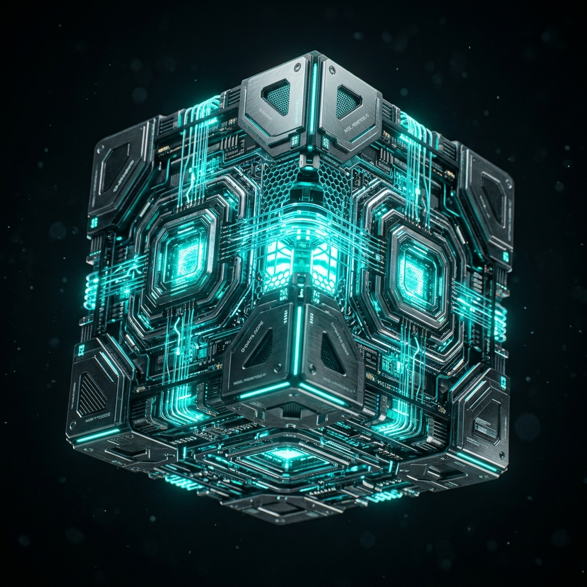

Build vs Buy vs Partner: The True Cost of AI Architecture
As enterprises rush to adopt Agentic AI, the sheer volume of choices is paralyzing. We analyze the hidden costs of building internal teams from scratch.
Read Full Article
Agentic backbone of the future. Solving complex productivity gaps through neural orchestration.
Deep strategic insights on transitioning from legacy data debt to pure AI equity. Written by our leadership team consisting of industry veterans with over 30 years of transformation expertise.
As enterprises rush to adopt Agentic AI, the sheer volume of choices is paralyzing. We analyze the hidden costs of building internal teams from scratch.
Read Full Article
It is a misconception that multi-agent systems are reserved for Fortune 500 companies. Small to Medium Enterprises are perfectly positioned to leverage AI automation.
Read Full ArticleYour LLM is only as intelligent as the data you feed it. We examine how fragmented silos and unstructured data lakes are actively hurting your inference costs.
Read Full ArticleHow do we ensure your raw business data never leaves your environment? We deep-dive into our Secure Orchestration Layer and Zero Data Retention configs.
Read Full Article
As agents begin to execute tasks across ERPs and CRMs, the question of accountability arises. We explore how to implement strict governance protocols.
Read Full Article
Moving AI agents into production requires more than just a clever prompt. Learn the orchestration secrets behind managing thousands of concurrent tasks.
Read Full ArticleDiscover how multi-agent swarms can bridge the gap between ERP data silos and real-world logistics disruptions in milliseconds.
Read Full ArticleExplore the Coaxis framework for radical transparency and verifiable governance that lives in the code, not just in the legal docs.
Read Full Article